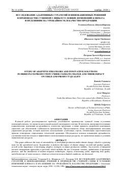

IAIqlim o'zgarishi sharoitida olxo'ri yetishtirish samaradorligini oshirish bo'yicha ilmiy tadqiqot.
Ushbu ilmiy maqolada iqlim o'zgarishi sharoitida quritilgan olxo'ri yetishtirishning barqarorligini ta'minlash bo'yicha adaptiv strategiyalar tahlil qilinadi. Mualliflar suv resurslarini tejash, zamonaviy sug'orish texnologiyalari va agrotexnik usullarni qo'llash orqali hosildorlik hamda mahsulot sifatini oshirish yo'llarini o'rganishgan.